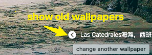

Welcome!
中文 | ENGLISH欢迎使用 Ataraxia 新标签页
点击搜索引擎logo，可切换搜索引擎。

鼠标移至右下角，点击按钮可切换至前几天的壁纸。连续向前切换7次后将回到当天壁纸。
鼠标指向右上角，可查看常去网站/手动添加的网址链接，或者打开设置。

在设置页面中，可以进行多项个性化设置
- 增加/删除搜索引擎，或调整搜索引擎顺序
- 可以开启极简模式，不显示搜索框
- 可以开启“显示经常访问的站点”，这样在首页可通过右上角快速访问
- 可以自定义右上角的链接
权限和隐私说明
- 插件不会进行任何形式的信息上传。您的设置信息仅保存在本地。
- 插件仅访问 https://www.bing.com 来下载壁纸信息
- 除此之外，插件不会访问其他任何网址，不会进行下载/上传，可放心使用。
还有疑问？ 反馈给我们